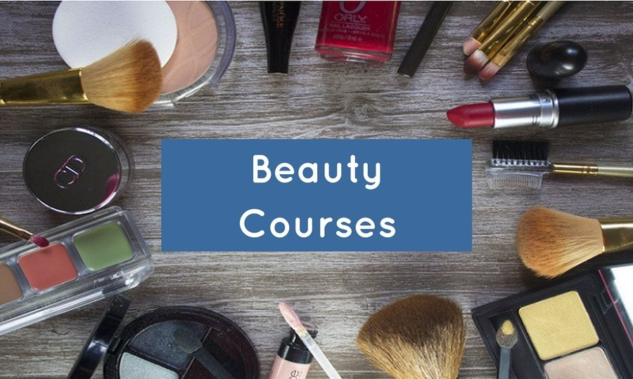

Diploma in Beauty Culture is a Diploma level Home Science course. Beauty is not simply a work but it has much deeper significance. An attractive appearance has become pre-requisite to move forward in life. This is a career oriented course. The theoretical and Practical Training imparted to the girls helps them in establishing themselves. Course starts with the zero knowledge of beauty culture and converts students in to professionals. There are so many career options especially in private sectors after its successful passing.
The course is suitable for those who might use latest techniques like cosmetology and other systems that suit the customer bests. Candidates should be able to use their knowledge and have skills for beautification of the people. They should possess good communication and interpersonal skills.
The course offers candidates necessary knowledge and skills to enable them to manage a Spa or Beauty Salon and Hair Salon environment effectively. On completion of the course, the trainees are expected to be able to accentuate good features with different make-up techniques; maintain hands/feet in healthy condition & decorate with Mehandi and many more related with beauty. They can also run their own private beauty shops.